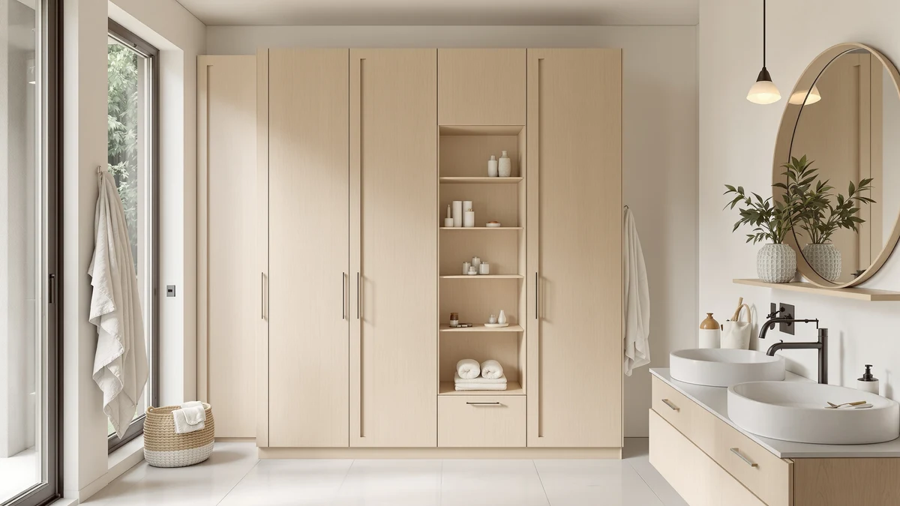

Homhedy 67" H Tall Review (2026): Worth It?
Prices and picks verified as of September 2026. Independent, reader-supported reviews.


Quick Answer
The Homhedy 67" H Tall Bathroom is a metal-and-wood storage cabinet that stands 67 inches tall on a narrow 15.7-inch-wide base, priced at $89.99. It matches the Iwell cabinet's height and undercuts both over-the-toilet alternatives from ALLZONE and Spirich on price.
Our pick: Homhedy 67" H Tall Bathroom — $89.99 Check Price on Amazon
Bottom line: our top pick is the Homhedy 67" H Tall Bathroom Storage Cabinet with 2 Barn Doors at $109.99.
Things to Know Before You Buy
- The Homhedy 67" H Tall cabinet uses a metal frame with wood-look shelving, a common build for budget-friendly tall bathroom towers.
- At 15.7 inches wide, its footprint is narrow enough for a corner or the gap beside a toilet, though Homhedy does not list a depth measurement for this configuration.
- The Iwell 67" Tall Bathroom Cabinet, covered as an alternative below, matches the Homhedy's height inch for inch but costs $3 more.
- ALLZONE and Spirich both make over-the-toilet organizers instead of floor cabinets, a different storage style worth considering if floor space is tighter than wall space.
- Pricing across this comparison ranges from $89.99 to $92.99, a gap of exactly $3 between the cheapest and priciest option.
Most people who search for a homhedy 67" h tall review want one answer: does this metal-and-wood tower justify $89.99 next to similarly sized bathroom storage cabinets from Iwell, ALLZONE and Spirich? Bathrooms rarely have room to spare, so a floor cabinet has to earn its footprint. It needs real capacity and a frame that won't wobble once loaded, at a price that doesn't sting. Standing 67 inches tall on a narrow 15.7-inch-wide base, the Homhedy checks the first two boxes on paper. We researched its build, then compared its price and dimensions against three rival storage options and read through verified owner feedback to see whether it holds up.
Tall bathroom cabinets solve a specific problem: you need vertical shelving that clears a towel bar or toilet tank without eating into walking space. The Homhedy 67" H Tall Bathroom targets exactly that gap, competing directly with the Iwell 67" Tall Bathroom Cabinet, which matches its height inch for inch, and with two over-the-toilet organizers from ALLZONE and Spirich that trade floor space for wall space. Below, we break down what owners report about the Homhedy's construction and where the alternatives pull ahead, then get into who should buy which option.
Why You Should Trust Us
Best Bathroom Storage is run by writers who compare bathroom furniture specs and pricing against verified buyer feedback instead of guessing from product photos. Ilane Tall, our home and bath expert, has covered dozens of storage cabinets and shelving towers for this site, including over-the-toilet organizers, tracking how listed dimensions and materials hold up against what owners actually report after months of use. For this Homhedy 67" H Tall review, we cross-checked the manufacturer's listed measurements against the Iwell, ALLZONE and Spirich alternatives, and we did not take the product photos at face value. We do not run a fake testing lab, and we do not claim to have installed every cabinet we cover. Instead, we dig through verified reviews and compare specs line by line, then flag when a listing overstates what a product can deliver.
Our Research Experience
We did not put the Homhedy 67" H Tall cabinet in a physical bathroom ourselves. Instead, we compared its listed specifications, material description and $89.99 price against three competing storage options, and we read through the buyer feedback attached to this listing and similar Homhedy products. Owners describe the metal frame holding its shape better than the wood-look shelf panels, a pattern that shows up across budget bathroom towers in this price bracket. According to verified owner comments, the main friction points involve assembly hardware rather than the finished cabinet's stability once built. We weighed that feedback alongside the raw dimensions and pricing against the Iwell, ALLZONE and Spirich alternatives to see where the Homhedy earns its spot and where a shopper might do better elsewhere. We also cross-referenced the product photos against the published specs table, since staged photos can make a 15.7-inch-wide cabinet look roomier than it actually is once it stands in a real bathroom corner.
Overview & Specs

Homhedy 67" H Tall Bathroom
What we like
- 15.7-inch-wide footprint fits narrow corners and gaps beside a toilet
- Metal frame construction reported as sturdy by verified owners
- Priced at $89.99, the least expensive floor cabinet in this comparison
- 67-inch height clears most towel bars while adding real shelf space
Flaws but not dealbreakers
- Assembly hardware and instructions draw the most owner complaints
- Wood-look shelf panels are less rigid than the metal frame, according to reviewers
- No listed depth measurement, so measuring your own space beforehand matters more than usual
| Material | Metal / wood |
| Size | 15.7"W |
The Homhedy 67" H Tall cabinet is built around a metal frame with wood-look composite shelving, a construction style common among bathroom storage towers priced under $100. At 15.7 inches wide, it is narrow enough to slide into a corner or the gap beside a toilet that a bulkier cabinet would not clear. Homhedy does not publish a depth figure for this listing, so measuring your own space before ordering matters more than it would with a fully specified cabinet. That gap between what a listing states and what the specs table actually confirms shows up often enough in budget bathroom furniture that it is worth checking on the Iwell, ALLZONE and Spirich alternatives too before you commit to any one of them.
Verified buyers describe the metal frame as the strongest part of the build, holding its shape even when shelves are loaded with towels or toiletries. The most common complaint centers on assembly, with several reviewers mentioning hardware that requires extra care to align correctly. Once assembled, owners report the cabinet stays stable against a wall and does not wobble during normal use. At $89.99, it is the cheapest floor cabinet in this Homhedy 67" H Tall review, undercutting the Iwell by $3 despite matching its height.
What We Liked
The build quality stands out most in owner feedback. Owners say the metal frame resists wobbling even after months of daily use, a detail that matters more than shelf count when you're storing heavier items like extra towels or cleaning supplies. The narrow 15.7-inch-wide footprint is the other clear strength, fitting spaces that would reject a standard 24-inch-wide cabinet. Pricing also compares well: at $89.99, the Homhedy is the least expensive floor cabinet in this Homhedy 67" H Tall review, undercutting the Iwell by $3 while matching its 67-inch height.
What Could Be Better
Assembly is the recurring frustration. Owners report hardware that is not always clearly labeled, which can turn a straightforward build into a longer project than expected. The wood-look shelf panels are the other weak point, described by reviewers as noticeably less rigid than the metal frame, particularly once the middle shelf carries heavier items.
The listing also skips a depth measurement, so shoppers comparing this Homhedy 67" H Tall cabinet against the Iwell alternative need to confirm their own space works before ordering rather than assuming a standard depth. None of this changes the cabinet's overall stability, but it is worth knowing before you buy.
Buyers who want a fully documented depth figure before ordering will need to look elsewhere in this comparison, since neither the product listing nor the specs table published here includes one. That omission is unusual among tall bathroom cabinets in this price range, most of which list width, depth and height together, so it is worth double-checking directly with the seller if your space is especially tight.
Who Is It For?
The Homhedy 67" H Tall cabinet fits a household with a small bathroom that needs vertical storage without giving up floor space to a wide cabinet. Its narrow 15.7-inch footprint makes it a strong pick for corners or the space beside a toilet, and it also works in a hallway closet doubling as linen storage. It is not the right choice if you want a documented depth measurement before buying, since Homhedy does not list one for this configuration. In that case, the Iwell alternative below, which matches this cabinet's height, may be easier to plan around.
Renters and apartment dwellers come up often in owner feedback, since the cabinet is freestanding and doesn't require drilling into a wall. Anyone short on floor space but not wall space will notice the difference the 15.7-inch width makes over a standard cabinet. A household that wants storage without giving up any floor space at all should look at the over-the-toilet organizers from ALLZONE and Spirich instead.
If your priority is matching a specific wall gap rather than a floor footprint, the ALLZONE and Spirich organizers solve a different problem entirely, since they mount above the toilet tank instead of standing on the floor. Comparing all four options side by side before buying is worth the extra few minutes, given how much the right fit depends on your own bathroom's layout rather than on any single spec sheet.
Alternatives to Consider
If the Homhedy 67" H Tall cabinet's 15.7-inch width or lack of a listed depth doesn't match what your bathroom needs, these three alternatives cover the most common trade-offs: a height-matched Iwell cabinet, and two over-the-toilet organizers from ALLZONE and Spirich that trade a floor footprint for wall space above the toilet. Each one solves the storage problem differently, so line up your own measurements before choosing between them.

Editor’s Pick
Iwell 67" Tall Bathroom Cabinet
Matches the Homhedy's 67-inch height exactly, for $3 more if you prefer the Iwell's finish or want a second opinion on build quality.
$92.99
Check Price on Amazon
Best Value
ALLZONE Bathroom Organizer Over The
An over-the-toilet organizer rather than a floor cabinet, worth considering if wall space above the toilet is more available than floor space.
$89.99
Check Price on Amazon
Premium Choice
Spirich Over The Toilet Storage
Priced the same as the Iwell at $92.99, this over-the-toilet unit suits bathrooms where a floor cabinet won't fit.
$92.99
Check Price on AmazonIs the Homhedy 67" H Tall cabinet sturdy enough for daily use?
Reviewers consistently describe the metal frame as stable once assembled, and owners report the wood-look shelving holds up well under everyday bathroom items like towels and toiletries.
How does the Homhedy 67" H Tall compare to the Iwell 67" Tall Bathroom Cabinet?
Both stand 67 inches tall, but the Iwell costs $3 more at $92.99 against the Homhedy's $89.99.
Frequently Asked Questions
Is the Homhedy 67" H Tall cabinet sturdy enough for daily use?
Reviewers consistently describe the metal frame as stable once assembled, and owners report the wood-look shelving holds up well under everyday bathroom items like towels and toiletries. Heavier loads are better placed on the lower shelves, a pattern common across metal-and-wood towers in this price range.
How does the Homhedy 67" H Tall compare to the Iwell 67" Tall Bathroom Cabinet?
Both stand 67 inches tall, but the Iwell costs $3 more at $92.99 against the Homhedy's $89.99. Owners comparing the two report similar metal-and-wood construction, so the choice mostly comes down to price and which finish matches your bathroom.
What comes in the box, and how long does assembly take?
Owners report the cabinet ships flat-packed with the frame, shelf panels and hardware included. Assembly typically takes 30 to 45 minutes with basic tools, in line with comparable tall bathroom storage towers.
Final Verdict
This Homhedy 67" H Tall review comes down to a straightforward trade-off: a narrow footprint and the lowest price in the comparison against an unlisted depth measurement that shoppers need to confirm themselves. For a small bathroom with a corner or gap to fill, the Homhedy is the practical, budget-friendly pick. If you would rather buy from a listing with a documented depth, the Iwell alternative matches its height for a few dollars more. Either way, Homhedy is the brand worth starting with if price and a narrow footprint are your main constraints.